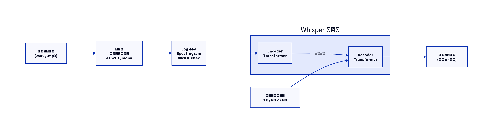

Whisper: Robust Speech Recognition via Large-Scale Weak Supervision
発表日: 2025-04-18 発表者: （担当者名） 論文: arXiv:2212.04356 著者: Alec Radford, Jong Wook Kim, et al. (OpenAI, 2022)
スライド
概要
Whisper は、インターネット上から収集した 68万時間 の音声データを用いて弱教師あり学習で訓練された音声認識モデル。 多言語・多タスク（転写・翻訳）に対応し、ゼロショットで既存モデルに匹敵する性能を達成した。
主要ポイント
- 大規模弱教師あり学習 — ラベルなし音声ではなく、Web から収集した音声+テキストペアを活用
- Encoder-Decoder Transformer — 標準的な seq2seq 構造を採用（特殊トークンでタスクを制御）
- 多言語・多タスク — 99言語の転写、X→English翻訳、言語識別、VADを単一モデルで処理
- ゼロショット汎化 — ファインチューニングなしで多様なデータセットで高性能
アーキテクチャ図
graph LR
A[音声入力\n16kHz] --> B[Log-Mel\nSpectrogram\n80ch]
B --> C[Encoder\nTransformer]
C --> D[Decoder\nTransformer]
D --> E[テキスト出力]
F[特殊トークン\nタスク指定] --> D処理パイプライン

感想・議論
- データ規模の圧倒的な優位性が汎化性能に直結
- 弱教師ラベルのノイズをモデルが吸収できる理由は？
- 日本語性能は他言語と比べると？